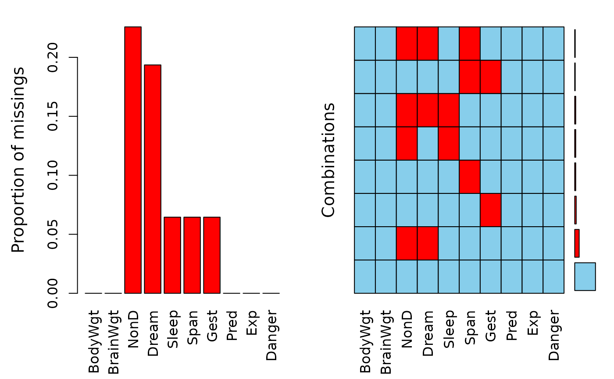

Calculate or plot the amount of missing/imputed values in each variable and the amount of missing/imputed values in certain combinations of variables.
Print method for objects of class "aggr".
Summary method for objects of class "aggr".
Print method for objects of class "summary.aggr".
aggr(x, delimiter = NULL, plot = TRUE, ...) # S3 method for aggr plot( x, col = c("skyblue", "red", "orange"), bars = TRUE, numbers = FALSE, prop = TRUE, combined = FALSE, varheight = FALSE, only.miss = FALSE, border = par("fg"), sortVars = FALSE, sortCombs = TRUE, ylabs = NULL, axes = TRUE, labels = axes, cex.lab = 1.2, cex.axis = par("cex"), cex.numbers = par("cex"), gap = 4, ... ) # S3 method for aggr print(x, ..., digits = NULL) # S3 method for aggr summary(object, ...) # S3 method for summary.aggr print(x, ...)
Arguments
| x | an object of class |
|---|---|
| delimiter | a character-vector to distinguish between variables and
imputation-indices for imputed variables (therefore, |
| plot | a logical indicating whether the results should be plotted (the
default is |
| ... | Further arguments, currently ignored. |
| col | a vector of length three giving the colors to be used for observed, missing and imputed data. If only one color is supplied, it is used for missing and imputed data and observed data is transparent. If only two colors are supplied, the first one is used for observed data and the second color is used for missing and imputed data. |
| bars | a logical indicating whether a small barplot for the frequencies of the different combinations should be drawn. |
| numbers | a logical indicating whether the proportion or frequencies of the different combinations should be represented by numbers. |
| prop | a logical indicating whether the proportion of missing/imputed values and combinations should be used rather than the total amount. |
| combined | a logical indicating whether the two plots should be
combined. If |
| varheight | a logical indicating whether the cell heights are given by the frequencies of occurrence of the corresponding combinations. |
| only.miss | a logical indicating whether the small barplot for the
frequencies of the combinations should only be drawn for combinations
including missing/imputed values (if |
| border | the color to be used for the border of the bars and
rectangles. Use |
| sortVars | a logical indicating whether the variables should be sorted by the number of missing/imputed values. |
| sortCombs | a logical indicating whether the combinations should be sorted by the frequency of occurrence. |
| ylabs | if |
| axes | a logical indicating whether axes should be drawn. |
| labels | either a logical indicating whether labels should be plotted on the x-axis, or a character vector giving the labels. |
| cex.lab | the character expansion factor to be used for the axis labels. |
| cex.axis | the character expansion factor to be used for the axis annotation. |
| cex.numbers | the character expansion factor to be used for the proportion or frequencies of the different combinations |
| gap | if |
| digits | the minimum number of significant digits to be used (see
|
| object | an object of class |
Value
for aggr, a list of class "aggr" containing the
following components:
x the data used.
combinations a character vector representing the combinations of variables.
count the frequencies of these combinations.
percent the percentage of these combinations.
missings a
data.framecontaining the amount of missing/imputed values in each variable.tabcomb the indicator matrix for the combinations of variables.
a list of class "summary.aggr" containing the following
components:
missings a
data.framecontaining the amount of missing or imputed values in each variable.combinations a
data.framecontaining a character vector representing the combinations of variables along with their frequencies and percentages.
Details
Often it is of interest how many missing/imputed values are contained in each variable. Even more interesting, there may be certain combinations of variables with a high number of missing/imputed values.
If combined is FALSE, two separate plots are drawn for the
missing/imputed values in each variable and the combinations of
missing/imputed and non-missing values. The barplot on the left hand side
shows the amount of missing/imputed values in each variable. In the
aggregation plot on the right hand side, all existing combinations of
missing/imputed and non-missing values in the observations are visualized.
Available, missing and imputed data are color coded as given by col.
Additionally, there are two possibilities to represent the frequencies of
occurrence of the different combinations. The first option is to visualize
the proportions or frequencies by a small bar plot and/or numbers. The
second option is to let the cell heights be given by the frequencies of the
corresponding combinations. Furthermore, variables may be sorted by the
number of missing/imputed values and combinations by the frequency of
occurrence to give more power to finding the structure of missing/imputed
values.
If combined is TRUE, a small version of the barplot showing
the amount of missing/imputed values in each variable is drawn on top of the
aggregation plot.
The graphical parameter oma will be set unless supplied as an
argument.
Note
Some of the argument names and positions have changed with version 1.3
due to extended functionality and for more consistency with other plot
functions in VIM. For back compatibility, the arguments labs
and names.arg can still be supplied to ...{} and are handled
correctly. Nevertheless, they are deprecated and no longer documented. Use
ylabs and labels instead.
References
M. Templ, A. Alfons, P. Filzmoser (2012) Exploring incomplete data using visualization tools. Journal of Advances in Data Analysis and Classification, Online first. DOI: 10.1007/s11634-011-0102-y.
See also
print.aggr(), summary.aggr()
aggr()
print.summary.aggr(), aggr()
summary.aggr(), aggr()
Other plotting functions:
barMiss(),
histMiss(),
marginmatrix(),
marginplot(),
matrixplot(),
mosaicMiss(),
pairsVIM(),
parcoordMiss(),
pbox(),
scattJitt(),
scattMiss(),
scattmatrixMiss(),
spineMiss()
Author
Andreas Alfons, Matthias Templ, modifications for displaying imputed values by Bernd Prantner
Matthias Templ, modifications by Andreas Alfons and Bernd Prantner
Matthias Templ, modifications by Andreas Alfons
Andreas Alfons, modifications by Bernd Prantner
Examples
a#> #> Missings in variables: #> Variable Count #> NonD 14 #> Dream 12 #> Sleep 4 #> Span 4 #> Gest 4summary(a)#> #> Missings per variable: #> Variable Count #> BodyWgt 0 #> BrainWgt 0 #> NonD 14 #> Dream 12 #> Sleep 4 #> Span 4 #> Gest 4 #> Pred 0 #> Exp 0 #> Danger 0 #> #> Missings in combinations of variables: #> Combinations Count Percent #> 0:0:0:0:0:0:0:0:0:0 42 67.741935 #> 0:0:0:0:0:0:1:0:0:0 3 4.838710 #> 0:0:0:0:0:1:0:0:0:0 2 3.225806 #> 0:0:0:0:0:1:1:0:0:0 1 1.612903 #> 0:0:1:0:1:0:0:0:0:0 2 3.225806 #> 0:0:1:1:0:0:0:0:0:0 9 14.516129 #> 0:0:1:1:0:1:0:0:0:0 1 1.612903 #> 0:0:1:1:1:0:0:0:0:0 2 3.225806## for imputed values sleep_IMPUTED <- kNN(sleep) a <- aggr(sleep_IMPUTED, delimiter="_imp")a#> #> Imputed missings in variables: #> Variable Count #> NonD 14 #> Dream 12 #> Sleep 4 #> Span 4 #> Gest 4summary(a)#> #> Imputed missings per variables: #> Variable Count #> BodyWgt 0 #> BrainWgt 0 #> NonD 14 #> Dream 12 #> Sleep 4 #> Span 4 #> Gest 4 #> Pred 0 #> Exp 0 #> Danger 0 #> #> Imputed missings in combinations of variables: #> Combinations Count Percent #> 0:0:0:0:0:0:0:0:0:0 42 67.741935 #> 0:0:0:0:0:0:2:0:0:0 3 4.838710 #> 0:0:0:0:0:2:0:0:0:0 2 3.225806 #> 0:0:0:0:0:2:2:0:0:0 1 1.612903 #> 0:0:2:0:2:0:0:0:0:0 2 3.225806 #> 0:0:2:2:0:0:0:0:0:0 9 14.516129 #> 0:0:2:2:0:2:0:0:0:0 1 1.612903 #> 0:0:2:2:2:0:0:0:0:0 2 3.225806#> #> Missings in variables: #> Variable Count #> NonD 14 #> Dream 12 #> Sleep 4 #> Span 4 #> Gest 4#> #> Missings per variable: #> Variable Count #> BodyWgt 0 #> BrainWgt 0 #> NonD 14 #> Dream 12 #> Sleep 4 #> Span 4 #> Gest 4 #> Pred 0 #> Exp 0 #> Danger 0 #> #> Missings in combinations of variables: #> Combinations Count Percent #> 0:0:0:0:0:0:0:0:0:0 42 67.741935 #> 0:0:0:0:0:0:1:0:0:0 3 4.838710 #> 0:0:0:0:0:1:0:0:0:0 2 3.225806 #> 0:0:0:0:0:1:1:0:0:0 1 1.612903 #> 0:0:1:0:1:0:0:0:0:0 2 3.225806 #> 0:0:1:1:0:0:0:0:0:0 9 14.516129 #> 0:0:1:1:0:1:0:0:0:0 1 1.612903 #> 0:0:1:1:1:0:0:0:0:0 2 3.225806#> #> Missings per variable: #> Variable Count #> BodyWgt 0 #> BrainWgt 0 #> NonD 14 #> Dream 12 #> Sleep 4 #> Span 4 #> Gest 4 #> Pred 0 #> Exp 0 #> Danger 0 #> #> Missings in combinations of variables: #> Combinations Count Percent #> 0:0:0:0:0:0:0:0:0:0 42 67.741935 #> 0:0:0:0:0:0:1:0:0:0 3 4.838710 #> 0:0:0:0:0:1:0:0:0:0 2 3.225806 #> 0:0:0:0:0:1:1:0:0:0 1 1.612903 #> 0:0:1:0:1:0:0:0:0:0 2 3.225806 #> 0:0:1:1:0:0:0:0:0:0 9 14.516129 #> 0:0:1:1:0:1:0:0:0:0 1 1.612903 #> 0:0:1:1:1:0:0:0:0:0 2 3.225806